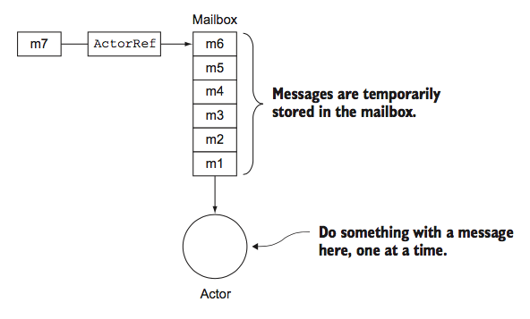
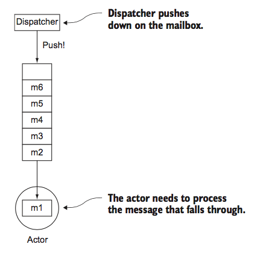

class: center, middle ## Akka Actor Basic Tour ### Kason Chan --- ## This talk was compiled with [tut](https://github.com/tpolecat/tut) ```tut:silent import akka.actor.{ActorRef, ActorSystem, DeadLetter, Inbox, Props} import com.typesafe.config.ConfigFactory import scala.concurrent.Await import scala.concurrent.duration._ ``` --- ## Akka * Built by Lightbend * Toolkit * A set of open-source libraries ([modules](http://akka.io/docs/)) for designing scalable, resilient systems * [Actors](http://doc.akka.io/docs/akka/current/scala/index-actors.html): local, remote, typed * [Network](http://doc.akka.io/docs/akka/current/scala/index-network.html): Akka cluster, Cluster Sharding * [Stream](http://doc.akka.io/docs/akka/current/scala/stream/index.html) * [Akka HTTP](http://doc.akka.io/docs/akka-http/current/scala/http/) --- ## Actor Model * A computational model invented decades ago by Hewitt, Bishop and Steiger in 1973 * Actor - A computational entity, in response to a message it receives * Send a finite number of messages to other actors * Create a finite number of new actors * Designate the behavior to be used for the next message it receives * Decoupled on three axes: * Space * Time * Interface --- ## Actor System * Create just one actor system per application in general* * Collects a hierarchy of actors, which share the same configuration * Mailbox types * How remote actors are accessed * Declarations of dispatchers that execute actors on threads * Other system and actor properties * We can create an actor system named actorsystem with default [configuration](http://doc.akka.io/docs/akka/current/scala/general/configuration.html): ```tut:silent val system = ActorSystem("actorsystem") ``` --- ## Actor System (Cont'd) * When actor system is created, <i>root guardian</i>, <i>user guardian</i> and <i>system guardian</i> are created along with it. <br> [<img src="../resources/tree.png" width="50%"/>](http://doc.akka.io/docs/akka/snapshot/scala/general/supervision.html) --- ## [Supervision and Monitor](http://doc.akka.io/docs/akka/current/scala/general/supervision.html) * Let it crash * Actor System supervision describes a dependency relationship between actors: * Supervisor delegates tasks to subordinates and therefore must respond to their failures * When a subordinate detects a failure (i.e. throws an exception), it suspends itself and all its subordinates and sends a message to its supervisor, signaling failure. * Supervisor can * Resume * Restart * Stop * Escalate --- ## Actor, ActorRef and Mailbox * We can create an actor named worker in the actor system ```tut:silent val worker: ActorRef = system.actorOf(Props[Worker], "worker") ``` * Messages are sent to the actor’s ActorRef. ```tut:silent worker ! "Hello World!" ``` * Every actor has a mailbox like a queue. <br>  --- ## [Dispatcher](http://doc.akka.io/docs/akka/current/scala/dispatchers.html) * Invoke actors by pushing the messages in the mailbox through the actors  * Actors are lightweight because they run on top of dispatchers * Actors aren’t necessarily directly proportional to the number of threads --- ## Demo --- ## References * Akka Docs: http://akka.io/docs/ * Reactive Messaging Patterns with Actor Model: https://github.com/VaughnVernon/ReactiveMessagingPatterns_ActorModel * Akka in Acton: https://www.manning.com/books/akka-in-action